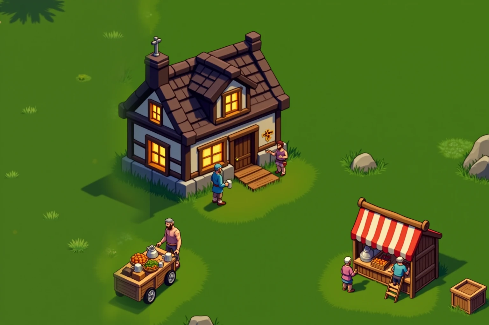
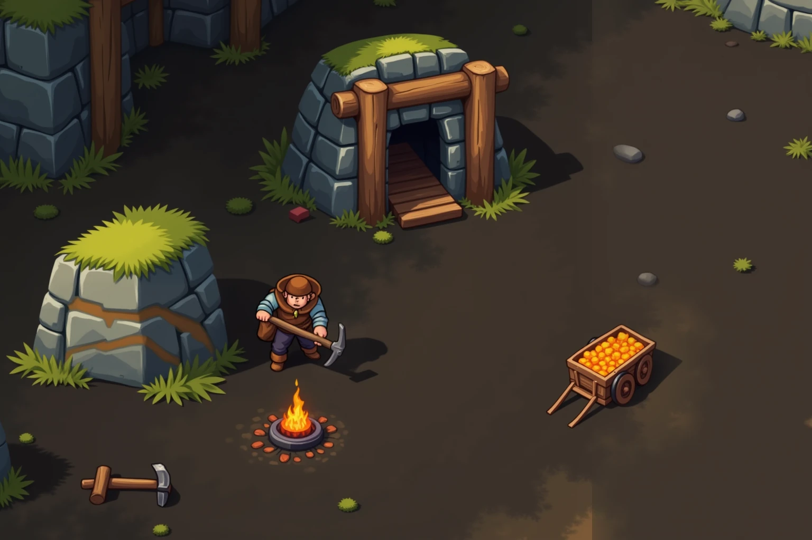
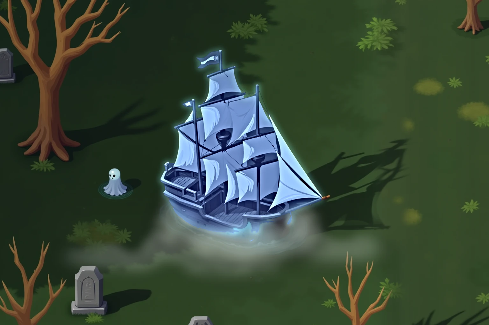

The village
A world that plays itself
Log off and the world stays. NPCs run dungeons, haul goods, haggle and drink in taverns. You are not arriving at an empty map.
The village
Log off and the world stays. NPCs run dungeons, haul goods, haggle and drink in taverns. You are not arriving at an empty map.
The forest
No level next to your name. Swing a sword and your sword skill grows; pick locks and your lockpicking does. Want a different character — play differently, don't roll a new one.
The mine
Every ore, log, herb and fish was pulled out of the ground by somebody's hands. Veins run out. The best ground is where people get killed. What you haul back is what you keep.
The spirit world
The living don't teach necromancy. Die, ride the ship of the dead as a ghost, and come back changed.
Home
Claim an empty patch of land and build it in layers: foundation, walls, door, roof. Your chests hold everything you have earned. At night the monsters test the walls.
Деревня
Вышел из игры — мир остался. NPC лезут в данжи, возят товар, торгуются и пьют в таверне. Ты приходишь не на пустую карту.
Лес
Уровня нет. Машешь мечом — растёт меч, лезешь по замкам — растёт взлом. Нужен другой персонаж — играй по-другому, а не создавай нового.
Шахта
Руду, дерево, траву и рыбу кто-то вытащил руками. Жилы кончаются, лучшее лежит там, где убивают. Сколько дотащил — столько и твоё.
Мир духов
Некромантию не учат живые. Умри, сядь духом на корабль мёртвых — и вернись другим.
Дом
Займи свободный клочок земли и строй слоями: фундамент, стены, дверь, крыша. В сундуках — всё нажитое. Ночью монстры проверят стены на прочность.


